12
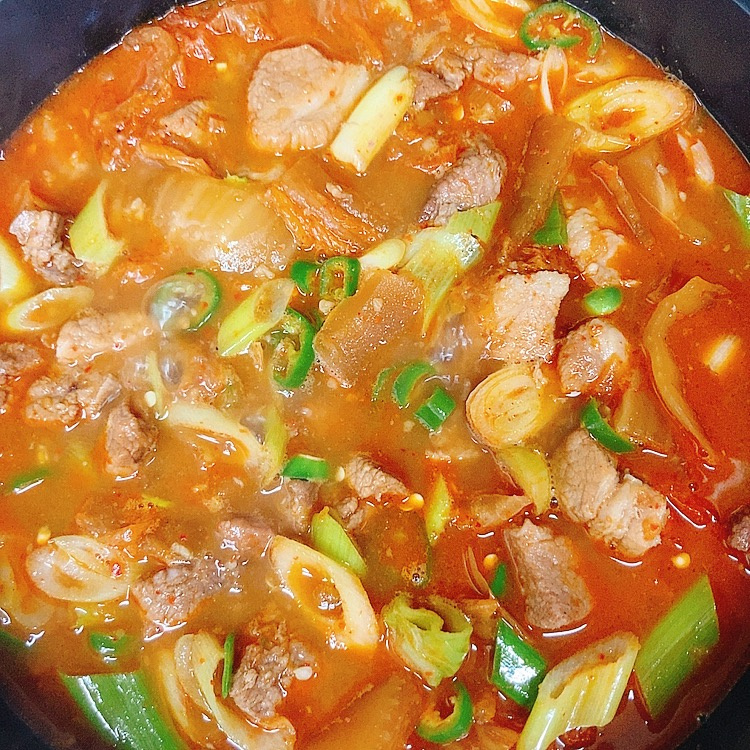
우리나라 전통의 한식
돼지고기 김치찌개 달인이 되는 황금레시피
나만 알고싶은 돼지고기김치찌개 레시피
4인분
30분 이내
초급
[재료]
돼지고기 앞다리살
500g
배추김치
1쪽
대파
1개
청양고추
2개
물
800ml
[양념]
된장
1수저
들기름
or 참기름
2수저
설탕
1/2수저
다진마늘
1수저
후추
2꼬집
키친타올로 고기 핏물을 제거하고 먹기 좋은 크기로 숭덩숭덩 잘라주세요.
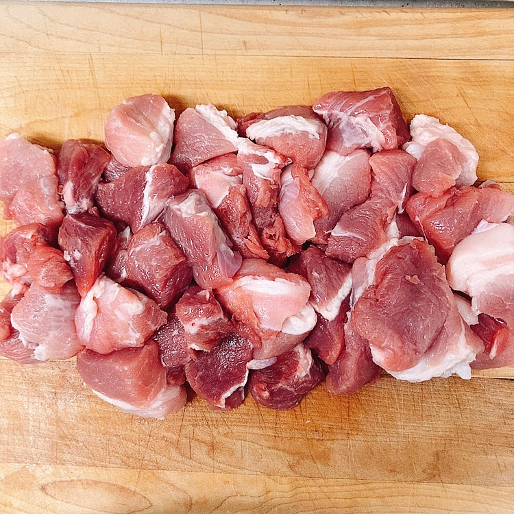
김치도 먹기 좋은 크기로 쫑쫑 썹니다.
냄비에 들기름 2수저와 된장 1수저 넣고 수저로 섞어주세요.
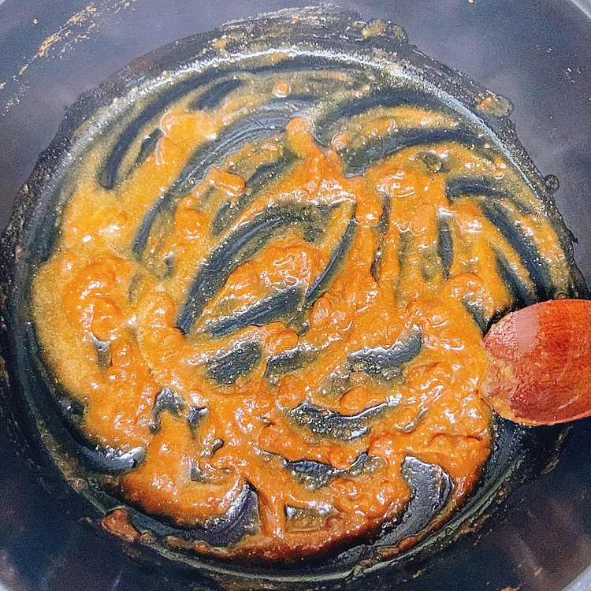
섞은 양념은 약불에서 짙은 갈색이 될때까지 볶아줍니다.
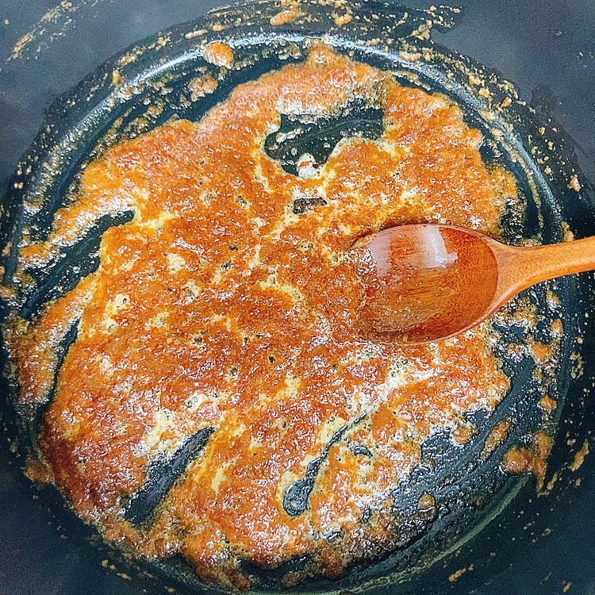
썰어놓은 고기와 설탕 1/2수저 넣고 중불로 올려 볶아주세요.
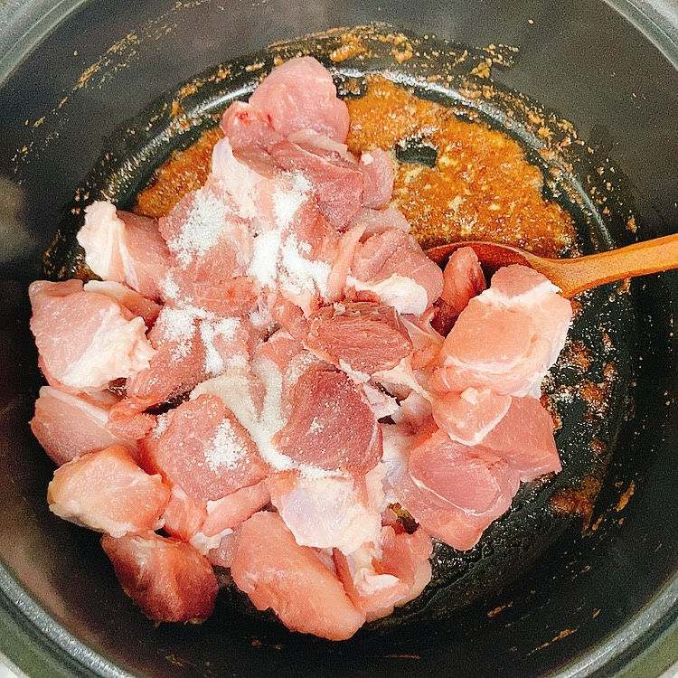
고기 겉면이 익을 때까지 잘 볶아주세요.
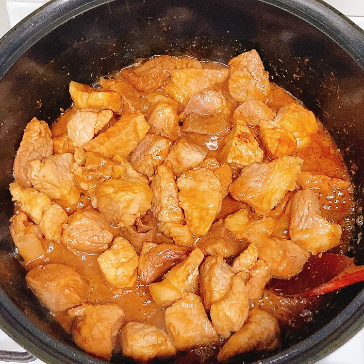
썰어놓은 김치를 넣고 열심히 볶아주세요.
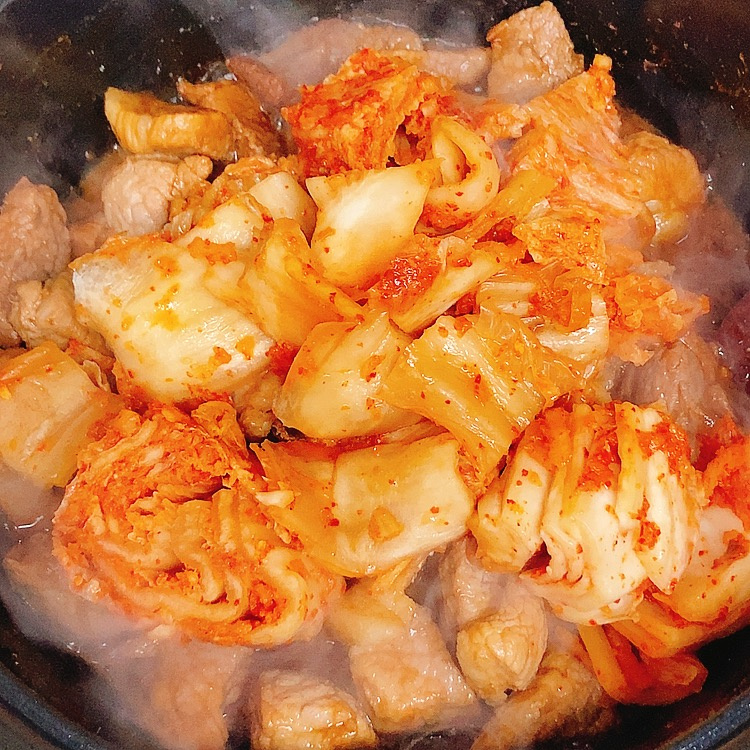
양념과 수분이 다 졸아들 때까지만 볶으시면 됩니다.
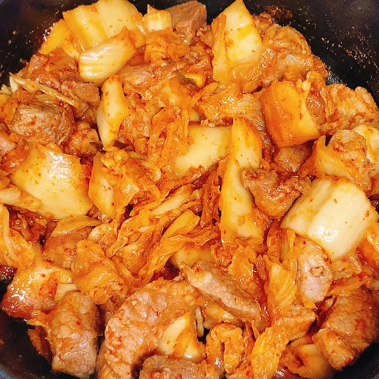
물 800ml를 넣고 강불로 끓여주세요.
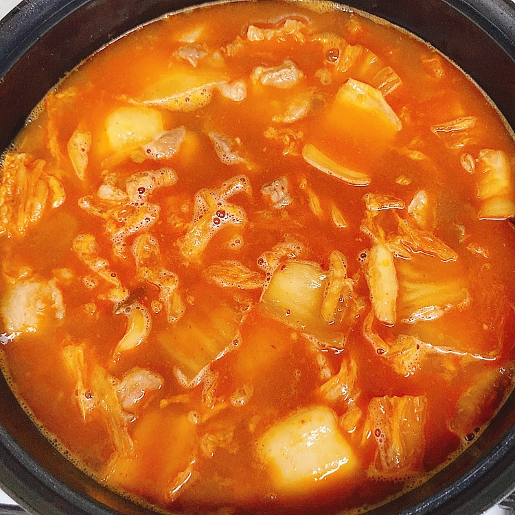
강불에서 팔팔 끓으면 뚜껑 덮고 약불로 줄여 20분간 끓여주세요.
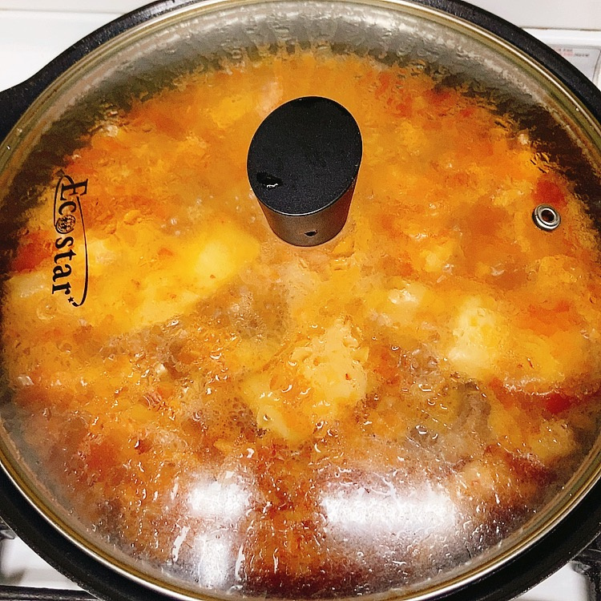
그동안 대파는 어슷썰고 청양고추는 송송 썰어주세요.
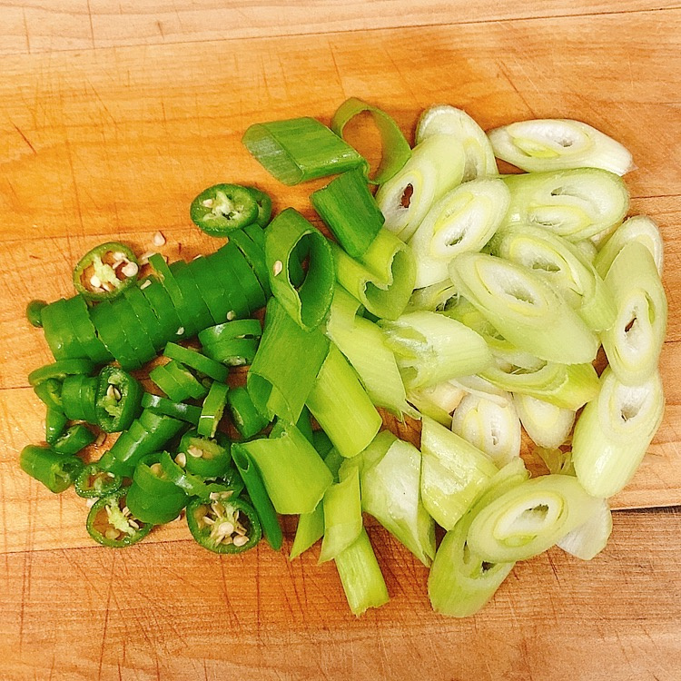
20분 뒤 불을 중불로 올린 뒤 다진마늘 1수저와 후추 2꼬집을 넣고 저어주세요.
모든 재료가 푹 익으면 완성입니다. 김치찌개는 오래 끓여먹어도 맛있으니 취향대로 더 끓여서 드셔도 됩니다.